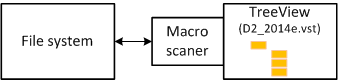
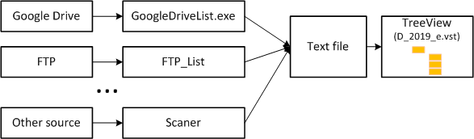
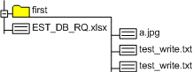

The Visio TreeView template provides a file system scan and automaticaly drawing a tree of folders and files in a Visio document. Today this popular template has received additional functionality, now it provides data import from a text file.
The principle of operation of the D2_2014e.vst template

The macro included in the Visio document retrieves data on the structure of folders and files from the operating system directly during the function of expanding the next node.
The principle of operation of the D_2019_e.vst template

In the new template, a Visio document uses a text file as a data source. At the beginning of the work, the data is selected from the file and stored in the document. Subsequent actions use a copy of the data.
A text file is an intermediate interface for communication with any data warehouse with a hierarchical structure. For Visio it does not matter how this file is received. Let it even be manually filled. Only the correct file structure is important.
I think, after a while, a number of different applications will be created that allow you to save the file structure of different remote or cloud storages as a text file. In the near future, such scanners for Google Drive and for FTP will be ready.
File example
ID,Name,ParentID,isFolder
1,EST_DB_RQ.xlsx,0,1
2,first,0,0
3,a.jpg,2,1
4,test_write.txt,2,1
5,test_write.txt,2,1
The resulting picture for this file

The structure of the file
The file should contain the following fields:
ID - numeric identifier
Name - file or folder name
ParentID - parent folder identifier. For the root folder or files lying in the root should be 0
isFolder - for folders should be 0.
Other template changes
In addition to adding a data source, the new template has made several small improvements.
Added the Collapse context menu to hide all subfolders and files. There was no such menu in the previous template, so subfolders and files had to be deleted manually.
The algorithm for placing data has been improved - automatic search for the nearest free space for placing the next tree branch has been added.
Additional links:
Description of the previous version - it still works.